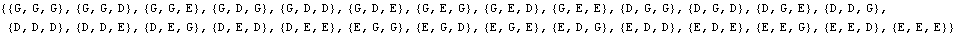
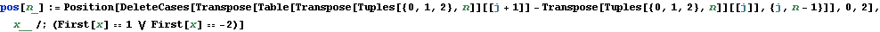
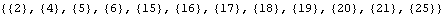
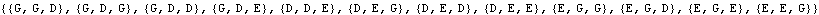
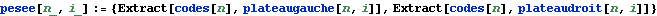
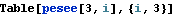
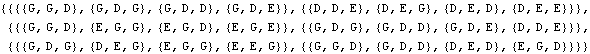
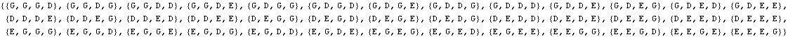
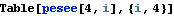
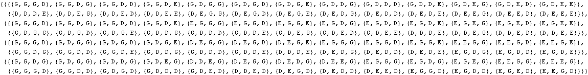

Le problème des 12, 39, 120, ..., boules.
Toute pesée livre un des trois résultats possibles : Gauche, Droite, Equilibre.
Exemple classique : 12 boules départagées en n=3 pesées par la méthode de Conway.

Seuls 12 mots codent les boules; dans la méthode de Conway, ils occupent ces positions dans la liste précédente :


Voici les codes des 12 boules :

Répartition des boules entre les plateaux lors de la mesure n° i

Voici comment se présentent les 3 pesées dans l’exemple n=3 (4 boules bien choisies par plateau) :


Réponse finale : chaque pesée livre un symbole, G, D ou E, et les symboles, pris dans l’ordre des pesées, livrent le mot qui identifie la boule défecteueuse. Si le mot est EEE, toutes les boules sont normales. GGG et DDD ne se produisent jamais.
Exemple moins classique : 39 boules départagées en n=4 pesées par la méthode de Conway.
Voici les codes des 39 boules :

Voici le détail des 4 pesées dans le cas n=4 (39 boules) : chaque pesée considère 13 boules (bien choisies !) dans chaque plateau.

